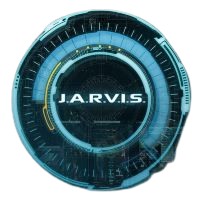

IRON MAN
Director General de Industrias Stark y miembro fundador de los Vengadores. Siendo el hijo de Howard Stark y poseyendo un gran intelecto, Stark se volvió un inventor de armas mundialmente reconocido hasta que fue secuestrado por los Diez Anillos. En su cautiverio, él diseñó un traje blindado para escapar de la organización, regresando a casa y convirtiéndose en el superhéroe conocido como Iron Man, luchando contra los terroristas y su ex compañero de negocios, Obadiah Stane. Stark gozó de la fama que le llegó con su nueva identidad secreta y decidió compartirla con el mundo, anunciando públicamente que él era Iron Man.
